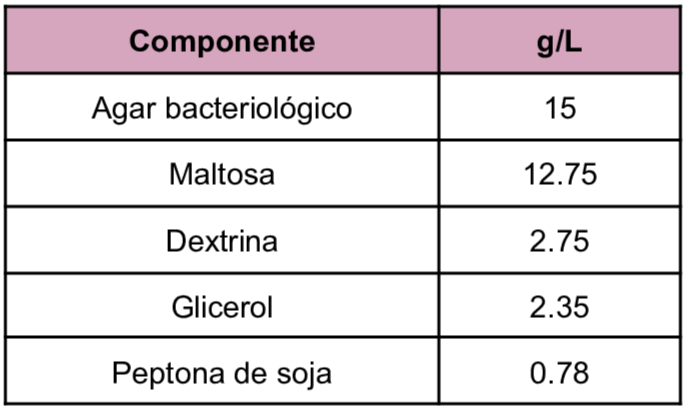
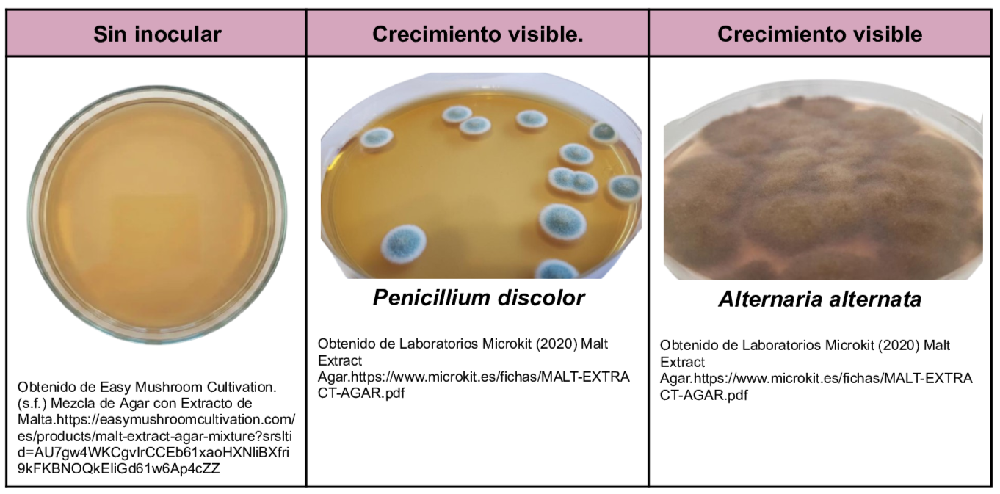

Medio para la detección, enumeración y aislamiento de levaduras y mohos principalmente en alimentos. Posee como su nombre lo indica una alta concentración de maltosa como fuente de energía, la dextrina y la glicerina son las fuentes de carbono además la peptona es una fuente de nitrógeno. El pH ácido del agar es óptimo para el crecimiento de levaduras y mohos.
Composición

pH a 25°C 5.4±0.2
Resultados Posibles
Se puede esperar un crecimiento variado dependiendo del hongo inoculado:

Referencias
Laboratorios Microkit (2020) Malt Extract Agar.https://www.microkit.es/fichas/MALT-EXTRACT-AGAR.pdf
Condalab (2019) Agar Extracto de Malta. https://amyd.quimica.unam.mx/pluginfile.php/9878/mod_folder/content/0/Agar%20Extracto%20de%20Malta.pdf?forcedownload=1